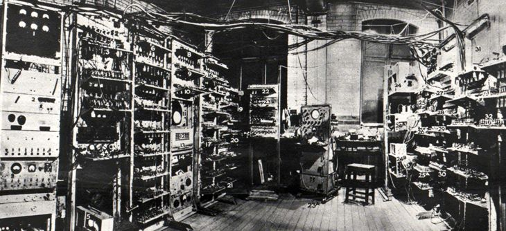
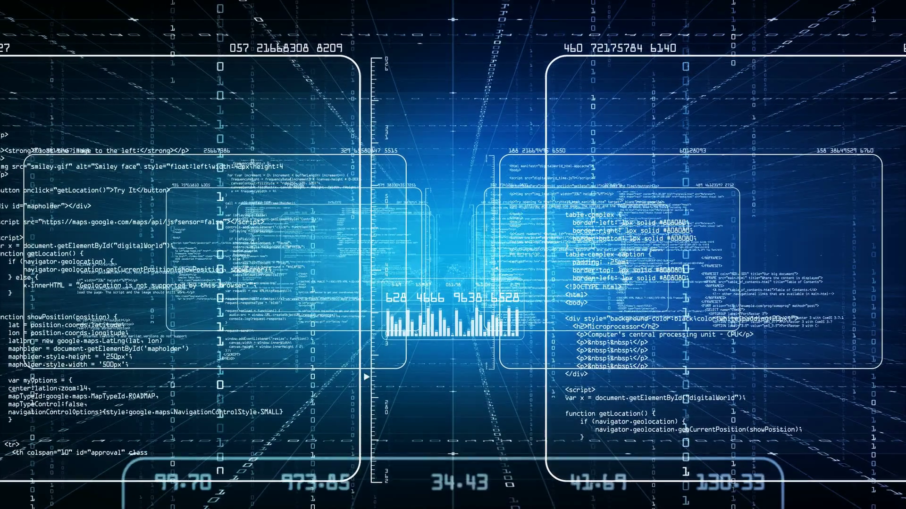
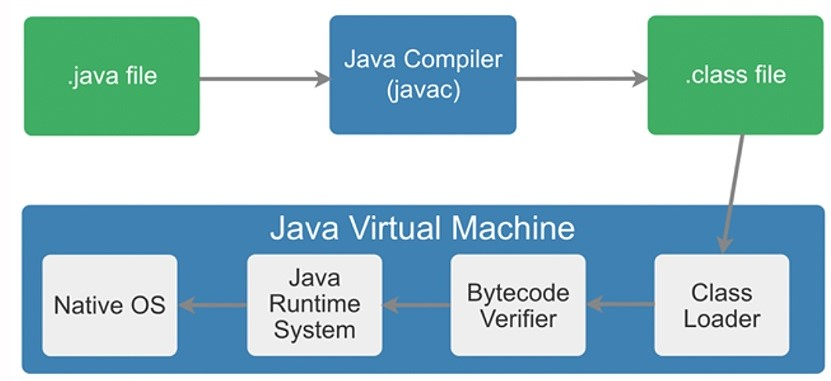

Nous vous proposons d’apprendre quelques langages de programmation ainsi que leurs méthodes de fonctionnement, mais avant de rentrer dans le vif du sujet, commençons par connaitre l’histoire de ceux-ci.
Tout d’abord posons le contexte.
Avant de programmer, il faut une machine programmable et la première fut inventée en 1801 par J-M Jacquard
avec un système de cartes perforées décrivant un motif bien défini. Par la suite est apparu en 1936 le premier
calculateur universel programmable, aussi appelé la machine de Turing.

Et enfin dans les années 40, le premier
ordinateur électrique fut créé. Ce fut une grande avancée technologique pour notre ère, malheureusement à cause
de la lenteur du processeur et la capacité limitée de la mémoire, les codes devaient être simples car ils dépendaient
de la machine et de plus, ils étaient entrés à la main en langage assembleur,
cette méthode pouvait entrainer des erreurs si une donnée était mal encodée.
Ensuite, dans le courant des années 50, les premiers langages de programmation font leur entrée avec le FORTRAN en 1954,
le LISP et l’ALGOL58 en 58 et le COBOL en 1959. À partir de la deuxième moitié des années 60, les paradigmes de programmation
s’instaurent et de nouveaux langages apparaissent comme le Simula67, qui intègre la programmation orientée objet,
le Pascal en 1970 qui remplace l’ALGOL68, le C, qu’il vous est possible d’apprendre ici, qui est l’un des premiers
langages portables
pour le système d’exploitation Unix, et le Prolog, précurseur du paradigme logique, en 1972, le ML en 1973, pionnier du
paradigme fonctionnel, et le Smalltalk dans le milieu des années 70 qui permet un environnement de développement intégré
entièrement graphique. Ces langages commencent à prendre leur indépendance face au matériel. Après, dans les années 80,
ce sont les années de consolidation, c’est-à-dire qu’au lieu de créer un nouveau langage, les anciens sont modifiés au
moyen d’un nouveau concept, les modules.
Le langage assembleur est remplacé par un compilateur qui traduira le code source, entré à la main dans un langage humain, en langage machine.
Ceci est possible grâce au RISC qui propose une amélioration au niveau de la rapidité du processeur.
En plus de cette consolidation, le langage C++ vient supplanter le C en 1983. Ensuite, l’ère d’Internet commence
en 1990, les langages sont combinés et maturés afin d’améliorer les programmes. Généralement orientés objet avec
un environnement de développement intégré, ils reçoivent en plus un ramasse-miettes,
cette nouvelle fonctionnalité donne naissance au C# au début de notre ère.
La deuxième chose à faire, c’est de se poser la question : mais qu’est-ce que c’est la programmation ? En quoi cela consiste ?
 La programmation est l’ensemble des activités qui permettent l’écriture des programmes informatiques, en d’autres termes il s’agit de la rédaction du code source des logiciels. Elle est généralement impérative lorsqu’on parle de langages de programmation. Ensuite, un programme est un ensemble d’instructions nécessaires à l’exécution d’une suite d’opérations demandées à un ordinateur (définition du dictionnaire Larousse). Ces instructions peuvent être simples ou un ensemble d’instructions réuni dans un bloc appelé « fonction ». Puis, un logiciel est un ensemble de programmes dédiés à la réalisation de certaines tâches par un (ou plusieurs) utilisateurs de ce logiciel (définitions de Wikipédia). En général, les programmes utilisent un langage de programmation dit impératif. Pour écrire un programme, il faut d’abord suivre quelques étapes. La première est la conception du programme, c’est-à-dire le but de celui-ci. En effet, avant de coder, il faut savoir de quoi va traiter le programme. Grâce à la conception, on peut donc analyser un programme comme une suite de données traitées produisant un résultat, et muni d’une méthode appelé « algorithme ». La seconde étape consiste en l’implémentation du programme. Celle-ci représente le codage du programme dans un langage de programmation défini par des exigences logicielles. La troisième phase est la transformation du code source, écrit par le programmeur, en langage machine. Pour ce faire, le programme passe par la compilation qui donne soit du langage machine soit du bytecode.  Le programme peut aussi être interprété lors de l’exécution, c’est-à-dire que la compilation au lieu d’être séparée de l’exécution est incluse dans celle-ci. On peut retrouver cette méthode dans des langages de programmation tels que le Python. L’avantage de cette pratique est que ces langages interprétés sont portables (ils peuvent être utilisés sur plusieurs plates-formes différentes), faciles d’écriture et permettent d’éviter de devoir ajouter un debugger car celui-ci est remplacé par un interpréteur qui affiche le contenu des variables. Cependant, la compilation séparée apporte une certaine rapidité car lors de l’exécution d’un langage interprété, il est systématique que l’interpréteur se lance et mobilise des ressources. Et enfin, la dernière étape, et une des plus importantes, consiste seulement à tester le programme grâce aux différents types de test, comme le test unitaire qui est une procédure permettant de vérifier le bon fonctionnement d'une partie précise d'un logiciel ou d'une portion d'un programme (définition de Wikipédia).